전기공사기사 (2020-06-06 기출문제)
1과목: 전기응용 및 공사재료
1. 전기 화학 반응을 실제로 일으키기 위해 필요한 전극 전위에서 그 반응의 평형 전위를 뺀 값을 과전압이라고 한다. 과전압의 원인으로 틀린 것은?
- 농도 분극
- 화학 분극
- 전류 분극
- 활성화 분극
(정답률: 57%)

2. 자기소호 기능이 가장 좋은 소자는?
- GTO
- SCR
- DIAC
- TRIAC
(정답률: 82%)
3. 플라이휠 효과 1kg·m2인 플라이휠 회전속도가 1500rpm에서 1200rpm으로 떨어졌다. 방출에너지는 약 몇 J인가?
- 1.11×103
- 1.11×104
- 2.11×103
- 2.11×104
(정답률: 67%)
4. 30W의 백열전구가 1800h에서 단선되었다. 이 기간 중에 평균 100lm의 광속을 방사하였다면 전광량(lm·h)은?
- 5.4×104
- 18×104
- 60
- 18
(정답률: 73%)
5. 평균구면 광도 100cd의 전구 5개를 지름 10m인 원형의 방에 점등할 때 조명률을 0.5, 감광보상률을 1.5로 하면 방의 평균 조도(lx)는 약 얼마인가?
- 18
- 23
- 27
- 32
(정답률: 68%)
6. 서미스터(Thermistor)의 주된 용도는?
- 온도 보상용
- 잡음 제거용
- 전압 증폭용
- 출력 전류 조절용
(정답률: 84%)
7. 전자빔 가열의 특징이 아닌 것은?
- 용접, 용해 및 천공작업 등에 응용된다.
- 에너지의 밀도나 분포를 자유로이 조절할 수 있다.
- 진공 중에서 가열이 불가능하다.
- 고융점 재료 및 금속박 재료의 용접이 쉽다.
(정답률: 77%)
8. 직류 전동기 중 공급전원의 극성이 바뀌면 회전방향이 바뀌는 것은?
- 분권기
- 평복권기
- 직권기
- 타여자기
(정답률: 73%)
9. 철도차량이 운행하는 곡선부의 종류가 아닌 것은?
- 단곡선
- 복곡선
- 반향곡선
- 완화곡선
(정답률: 75%)
10. 유전가열의 용도로 틀린 것은?
- 목재의 건조
- 목재의 접착
- 염화비닐막의 접착
- 금속 표면처리
(정답률: 82%)
11. 후강 전선관에 대한 설명으로 틀린 것은?
- 관의 호칭은 바깥지름의 크기에 가깝다.
- 후강전선관의 두께는 박강전선관의 두께보다 두껍다.
- 콘크리트에 매입할 경우 관의 두께는 1.2mm 이상으로 해야 한다.
- 관의 호칭은 16mm에서 104mm까지 10종이다.
(정답률: 56%)
12. 백열전구에서 사용되는 필라멘트 재료의 구비조건으로 틀린 것은?
- 용융점이 높을 것
- 고유저항이 클 것
- 선팽창계수가 높을 것
- 높은 온도에서 증발이 적을 것
(정답률: 75%)
13. 내선규정에서 정하는 용어의 정의로 틀린 것은?
- 케이블이란 통신용케이블 이외의 케이블 및 캡타이어케이블을 말한다.
- 애자란 놉애자, 인류애자, 핀애자와 같이 전선을 부착하여 이것을 다른 것과 절연하는 것을 말한다.
- 전기용품이란 전기설비의 부분이 되거나 또는 여기에 접속하여 사용되는 기계기구 및 재료 등을 말한다.
- 불연성이란 불꽃, 아크 또는 고열에 의하여 착화하기 어렵거나 착화하여도 쉽게 연소하지 않는 성질을 말한다.
(정답률: 67%)
14. 배전반 및 분전반을 넣는 함을 강판제로 만들 경우 함의 최소 두께(mm)는? (단, 가로 또는 세로의 길이가 30cm를 초과하는 경우이다.)
- 1.0
- 1.2
- 1.4
- 1.6
(정답률: 69%)
15. 피뢰설비 설치에 관한 사항으로 옳은 것은?
- 수뢰부는 동선을 기준으로 35mm2 이상
- 접지극은 동선을 기준으로 50mm2 이상
- 인하도선은 동선을 기준으로 16mm2 이상
- 돌침은 건축물의 맨 윗부분으로부터 20cm 이상 돌출
(정답률: 72%)
16. 저압 전선로 등의 중성선 또는 접지측 전선의 식별에서 애자의 빛깔에 의하여 식별하는 경우에는 어떤 색의 애자를 접지측으로 사용하는가?
- 청색 애자
- 백색 애자
- 황색 애자
- 흑색 애자
(정답률: 74%)
17. 지선으로 사용되는 전선의 종류는?
- 경동연선
- 중공연선
- 아연도철연선
- 강심알루미늄연선
(정답률: 58%)
18. 자심재료의 구비조건으로 틀린 것은?
- 저항률이 클 것
- 투자율이 작을 것
- 히스테리시스 면적이 작을 것
- 잔류자기가 크고 보자력이 작을 것
(정답률: 59%)
19. 철근 콘크리트주로서 전장 16m이고, 설계하중이 8kN이라 하면 땅에 묻는 최소 깊이(m)는? (단, 지반이 연약한 곳 이외에 시설한다.)
- 2.0
- 2.4
- 2.5
- 2.8
(정답률: 65%)
20. 형광판, 야광도료 및 형광방전등에 이용되는 루미네선스는?
- 열 루미네선스
- 전기 루미네선스
- 복사 루미네선스
- 파이로 루미네선스
(정답률: 66%)
2과목: 전력공학
21. 중성점 직접접지방식의 발전기가 있다. 1선지락 사고시 지락전류는? (단, Z1, Z2, Z0는 각각 정상, 역상, 영상 임피던스이며, Ea는 지락된 상의 무부하 기전력이다.)
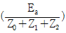
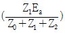
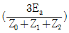
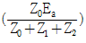
(정답률: 31%)
22. 고장 즉시 동작하는 특성을 갖는 계전기는?
- 순시 계전기
- 정한시 계전기
- 반한시 계전기
- 반한시성 정한시 계전기
(정답률: 35%)
23. 4단자 정수 A=0.9918+j0.0042, B=34.17+j50.38, C=(-0.006+j3247)×10-4인 송전 선로의 송전단에 66kV를 인가하고 수전단을 개방하였을 때 수전단 선간전압은 약 몇 kV인가?
- 66.55/√3
- 62.5
- 62.5/√3
- 66.55
(정답률: 23%)
24. 댐의 부속설비가 아닌 것은?
- 수로
- 수조
- 취수구
- 흡출관
(정답률: 27%)
25. 다음 중 송전계통의 절연협조에 있어서 절연레벨이 가장 낮은 기기는?
- 피뢰기
- 단로기
- 변압기
- 차단기
(정답률: 33%)
26. 송배전 선로에서 선택지락계전기(SGR)의 용도는?
- 다회선에서 접지 고장 회선의 선택
- 단일 회선에서 접지 전류의 대소 선택
- 단일 회선에서 접지 전류의 방향 선택
- 단일 회선에서 접지 사고의 지속 시간 선택
(정답률: 34%)
27. 전력설비의 수용률을 나타낸 것은?
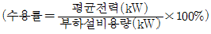
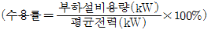
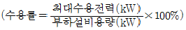
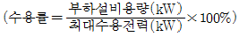
(정답률: 31%)
28. 변전소에서 비접지 선로의 접지보호용으로 사용되는 계전기에 영상전류를 공급하는 것은?
- CT
- GPT
- ZCT
- PT
(정답률: 36%)
29. 송전선로에서 가공지선을 설치하는 목적이 아닌 것은?
- 뇌(雷)의 직격을 받을 경우 송전선 보호
- 유도뢰에 의한 송전선의 고전위 방지
- 통신선에 대한 전자유도장해 경감
- 철탑의 접지저항 경감
(정답률: 30%)
30. 전선의 표피 효과에 대한 설명으로 알맞은 것은?
- 전선이 굵을수록, 주파수가 높을수록 커진다.
- 전선이 굵을수록, 주파수가 낮을수록 커진다.
- 전선이 가늘수록, 주파수가 높을수록 커진다.
- 전선이 가늘수록, 주파수가 낮을수록 커진다.
(정답률: 29%)
31. 30000kW의 전력을 51km 떨어진 지점에 송전하는데 필요한 전압은 약 몇 kV인가? (단, Still의 식에 의하여 산정한다.)
- 22
- 33
- 66
- 100
(정답률: 26%)
32. 화력발전소에서 절탄기의 용도는?
- 보일러에 공급되는 급수를 예열한다.
- 포화증기를 과열한다.
- 연소용 공기를 예열한다.
- 석탄을 건조한다.
(정답률: 30%)
33. 정격전압 7.2kV, 정격차단용량 100MVA인 3상 차단기의 정격 차단전류는 약 몇 kA인가?
- 4
- 6
- 7
- 8
(정답률: 28%)
34. 단로기에 대한 설명으로 틀린 것은?
- 소호장치가 있어 아크를 소멸시킨다.
- 무부하 및 여자전류의 개폐에 사용된다.
- 사용회로수에 의해 분류하면 단투형과 쌍투형이 있다.
- 회로의 분리 또는 계통의 접속 변경 시 사용한다.
(정답률: 31%)
35. 일반회로정수가 같은 평행 2회선에서 A, B, C, D는 각각 1회선의 경우의 몇 배로 되는가?
- A:2배, B:2배, C:1/2배, D:1배
- A:1배, B:2배, C:1/2배, D:1배
- A:1배, B:1/2배, C:2배, D:1배
- A:1배, B:1/2배, C:2배, D:2배
(정답률: 23%)
36. 증기터빈 출력을 P(kW), 증기량을 W(t/h), 초압 및 배기의 증기 엔탈피를 각각 i0, i1(kcal/kg)이라 하면 터빈의 효율 ηT(%)는?
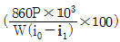
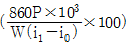
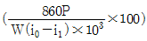
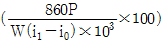
(정답률: 23%)
37. 수전단의 전력원 방정식이 Pr2+(Qr+400)2=250000 으로 표현되는 전력계통에서 조상설비 없이 전압을 일정하게 유지하면서 공급할 수 있는 부하전력은? (단, 부하는 무유도성이다.)
- 200
- 250
- 300
- 350
(정답률: 32%)
38. 사고, 정전 등의 중대한 영향을 받는 지역에서 정전과 동시에 자동적으로 예비전원용 배전선로로 전환하는 장치는?
- 차단기
- 리클로저(Recloser)
- 섹셔널라이저(Sectionalizer)
- 자동 부하 전환개폐기(Auto Load Transfer Switch)
(정답률: 33%)
39. 3상 배전선로의 말단에 역률 60%(늦음), 60kW의 평형 3상 부하가 있다. 부하점에 부하와 병렬로 전력용 콘덴서를 접속하여 선로손실을 최소로 하고자 할 때 콘덴서 용량(kVA)은? (단, 부하단의 전압은 일정하다.)
- 40
- 60
- 80
- 100
(정답률: 30%)
40. 3상3선식에서 전선 한 가닥에 흐르는 전류는 단상2선식의 경우의 몇 배가 되는가? (단, 송전전력, 부하역률, 송전거리, 전력손실 및 선간전압이 같다.)
- 1/√3
- 2/3
- 3/4
- 4/9
(정답률: 14%)
3과목: 전기기기
41. 전압변동률이 작은 동기발전기의 특성으로 옳은 것은?
- 단락비가 크다.
- 속도변도률이 크다.
- 동기 리액턴스가 크다.
- 전기자 반작용이 크다.
(정답률: 30%)
42. 단자전압 110V, 전기자 전류 15A, 전기자회로의 저항 2Ω, 정격속도 1800rpm 으로 전부하에서 운전하고 있는 직류 분권전동기의 토크는 약 몇 N·m 인가?
- 6.0
- 6.4
- 10.08
- 11.14
(정답률: 17%)
43. 단권변압기의 설명으로 틀린 것은?
- 분로권선과 직렬권선으로 구분된다.
- 1차 권선과 2차 권선의 일부가 공통으로 사용된다.
- 3상에는 사용할 수 없고 단상으로만 사용한다.
- 분로권선에서 누설자속이 없기 때문에 전압변동률이 작다.
(정답률: 31%)
44. 출력이 20kW인 직류발전기의 효율이 80%이면 전 손실은 약 몇 kW인가?
- 0.8
- 1.25
- 5
- 45
(정답률: 28%)
45. 용량 1kVA, 3000/200V의 단상변압기를 단권변압기로 결선해서 3000/3200V의 승압기로 사용할 때 그 부하용량(kVA)은?
- 1/16
- 1
- 15
- 16
(정답률: 19%)
46. 단상 유도전동기의 분상 기동형에 대한 설명으로 틀린 것은?
- 보조권선은 높은 저항과 낮은 리액턴스를 갖는다.
- 주권선은 비교적 낮은 저항과 높은 리액턴스를 갖는다.
- 높은 토크를 발생시키려면 보조권선에 병렬로 저항을 삽입한다.
- 전동기가 기동하여 속도가 어느 정도 상승하면 보조권선을 전원에서 분리해야 한다.
(정답률: 20%)
47. 스텝 모터에 대한 설명으로 틀린 것은?
- 가속과 감속이 용이하다.
- 정·역 및 변속이 용이하다.
- 위치제어 시 각도 오차가 작다.
- 브러시 등 부품수가 많아 유지보수 필요성이 크다.
(정답률: 29%)
48. 계자 권선이 전기자에 병렬로만 연결된 직류기는?
- 분권기
- 직권기
- 복권기
- 타여자기
(정답률: 31%)
49. 1차 전압 6600V, 권수비 30인 단상변압기로 전등부하에 30A를 공급할 때의 입력(kW)은? (단, 변압기의 손실은 무시한다.)
- 4.4
- 5.5
- 6.6
- 7.7
(정답률: 31%)
50. 유도전동기를 정격상태로 사용 중, 전압이 10% 상승할 때 특성변화로 틀린 것은? (단, 부하는 일정 토크라고 가정한다.)
- 슬립이 작아진다.
- 역률이 떨어진다.
- 속도가 감소한다.
- 히스테리스스손과 와류손이 증가한다.
(정답률: 19%)
51. 정격전압 6600V인 3상 동기발전기가 정격출력(역률=1)으로 운전할 때 전압 변동률이 12%이었다. 여자전류와 회전수를 조정하지 않은 상태로 무부하 운전하는 경우 단자전압(V)은?
- 6433
- 6943
- 7392
- 7842
(정답률: 29%)
52. 동기전동기의 공급 전압과 부하를 일정하게 유지하면서 역률을 1로 운전하고 있는 상태에서 여자 전류를 증가시키면 전기자전류는?
- 앞선 무효전류가 증가
- 앞선 무효전류가 감소
- 뒤진 무효전류가 증가
- 뒤진 무효전류가 감소
(정답률: 29%)
53. 전원전압이 100V인 단상 전파정류제어에서 점호각이 30°일 때 직류 평균전압은 약 몇 V인가?
- 54
- 64
- 84
- 94
(정답률: 26%)
54. 도통(on)상태에 있는 SCR을 차단(off)상태로 만들기 위해서는 어떻게 하여야 하는가?
- 게이트 펄스전압을 가한다.
- 게이트 전류를 증가시킨다.
- 게이트 전압이 부(-)가 되도록 한다.
- 전원전압이 극성이 반대가 되도록 한다.
(정답률: 22%)
55. 단상 유도전동기의 기동 시 브러시를 필요로 하는 것은?
- 분상 기동형
- 반발 기동형
- 콘덴서 분상 기동형
- 세이딩 코일 기동형
(정답률: 25%)
56. 3선 중 2선의 전원 단자를 서로 바꾸어서 결선하면 회전방향이 바뀌는 기기가 아닌 것은?
- 회전변류기
- 유도전동기
- 동기전동기
- 정류자형 주파수 변환기
(정답률: 22%)
57. 직류전동기의 워드레오나드 속도제어 방식으로 옳은 것은?
- 전압제어
- 저항제어
- 계자제어
- 직병렬제어
(정답률: 26%)
58. 변압기의 %Z가 커지면 단락전류는 어떻게 변화하는가?
- 커진다.
- 변동없다.
- 작아진다.
- 무한대로 커진다.
(정답률: 30%)
59. 직류발전기에 P(N·m/s)의 기계적 동력을 주면 전력은 몇 W로 변환되는가? (단, 손실은 없으며 ia는 전기자 도체의 전류, e는 전기자 도체의 유도기전력, Z는 총도체수이다.)
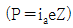
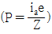
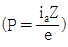
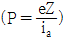
(정답률: 23%)
60. 3상 20000kVA인 동기발전기가 있다. 이 발전기는 60Hz 일 때는 200rpm, 50Hz일 때는 약 167rpm으로 회전한다. 이 동기발전기의 극수는?
- 18극
- 36극
- 54극
- 72극
(정답률: 30%)
4과목: 회로이론 및 제어공학
61. RLC 직렬회로의 파라미터가 R2=4L/C의 관계를 가진다면, 이 회로에 직류 전압을 인가하는 경우 과도 응답특성은?
- 무제동
- 과제동
- 부족제동
- 임계제동
(정답률: 27%)
62.
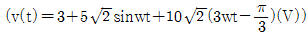
의 실효값 크기는 약 몇 V인가?- 9.6
- 10.6
- 11.6
- 12.6
(정답률: 29%)
63. 3상전류가 Ia=10+j3(A), Ib=-5-j2(A), Ic=-3+j4(A)일 때 정상분 전류의 크기는 약 몇 A인가?
- 5
- 6.4
- 10.5
- 13.34
(정답률: 19%)
64. 그림의 회로에서 영상 임피던스 Z01이 6Ω일 때, 저항 R의 값은 몇 Ω인가?
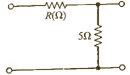
- 2
- 4
- 6
- 9
(정답률: 16%)
65. 회로에서 0.5Ω 양단 전압(V)은 약 몇 V인가?
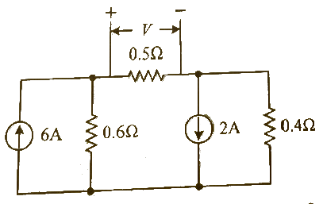
- 0.6
- 0.93
- 1.47
- 1.5
(정답률: 18%)
66. Y결선의 평형 3상 회로에서 선간전압 Vab와 상전압 Van의 관계로 옳은 것은? (단, Vbn=Vane-j(2π/3), Vcn=Vbne-j(2π/3))
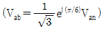
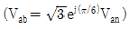
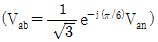
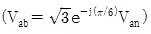
(정답률: 18%)
67. 8+j6(Ω)인 임피던스에 13+j20(V)의 전압을 인가할 때 복소전력은 약 몇 VA인가?
- 12.7+j34.1
- 12.7+j55.5
- 45.5+j34.1
- 45.5+j55.5
(정답률: 14%)
68. 그림과 같이 결선된 회로의 단자(a, b, c)에 선간전압이 V(V)인 평형 3상 전압을 인가할 때 상전류 I(A)의 크기는?
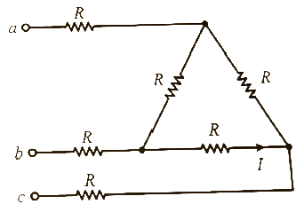
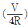
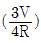
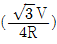
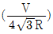
(정답률: 13%)
69. 선로의 단위 길이 당 인덕턴스, 저항, 정전용량, 누설 컨덕턴스를 각각 L, R, C, G라 하면 전파정수는?
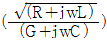
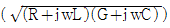
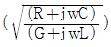
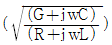
(정답률: 30%)
70. f(t)= t2e-αt를 라플라스 변환하면?
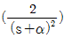
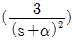
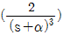
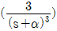
(정답률: 26%)
71. 특성방정식이 s3+2s2+Ks+10=0로 주어지는 제어시스템이 안정하기 위한 K의 범위는?
- K＞0
- K＞5
- K＜0
- 0＜K＜5
(정답률: 26%)
72. 제어시스템의 개루프 전달함수가
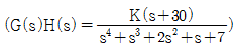
로 주어질 때, 다음 중 K＞0인 경우 근궤적의 점근선이 실수축과 이루는 각(°)은?- 20°
- 60°
- 90°
- 120°
(정답률: 19%)
73. 그림과 같은 제어시스템의 전달함수 C(s)/R(s)는?
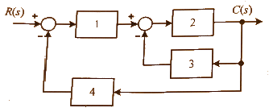
- 1/15
- 2/15
- 3/15
- 4/15
(정답률: 31%)
74. 그림과 같은 논리회로의 출력 Y는?
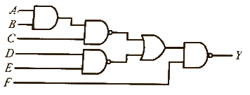
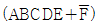
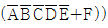
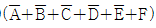
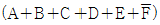
(정답률: 29%)
75. 전달함수가
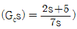
인 제어기가 있다. 이 제어기는 어떤 제어기인가?- 비례 미분 제어기
- 적분 제어기
- 비례 적분 제어기
- 비례 적분 미분 제어기
(정답률: 18%)
76. 그림의 신호흐름선도에서 전달함수 C(s)/R(s)는?
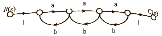
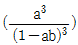
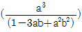
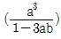
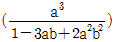
(정답률: 16%)
77. 단위 피드백제어계에서 개루프 전달함수 G(s)가 다음과 같이 주어졌을 때 단위계단 입력에 대한 정상상태 편차는?
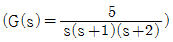
- 0
- 1
- 2
- 3
(정답률: 18%)
78. 안정한 제어시스템의 보드 선도에서 이득 여유는?
- -20∼20dB 사이에 있는 크기(dB) 값이다.
- 0∼20dB 사이에 있는 크기 선도의 길이이다.
- 위상이 0°가 되는 주파수에서 이득의 크기(dB)이다.
- 위상이 -180°가 되는 주파수에서 이득의 크기(dB)이다.
(정답률: 30%)
79. z 변환된 함수 에 대응되는 라플라스 변환 함수는?
(정답률: 23%)
80. 다음과 같은 미분방정식으로 표현되는 제어시스템의 시스템 행렬 A는?
(정답률: 30%)
5과목: 전기설비기술기준 및 판단기준
81. 백열전등 또는 방전등에 전기를 공급하는 옥내전로의 대지전압은 몇 V 이하이어야 하는가? (단, 백열전등 또는 방전등 및 이에 부속하는 전선은 사람이 접촉할 우려가 없도록 시설한 경우이다.)
- 60
- 110
- 220
- 300
(정답률: 31%)
82. 케이블 트레이 공사에 사용하는 케이블 트레이에 적합하지 않은 것은?
- 비금속제 케이블 트레이는 난연성 재료가 아니어도 된다.
- 금속재의 것은 적절한 방식처리를 한 것이거나 내식성 재료의 것이어야 한다.
- 금속제 케이블 트레이 계통은 기계적 및 전기적으로 완전하게 접속하여야 한다.
- 케이블 트레이가 방화구획의 벽 등을 관통하는 경우에 관통부는 불연성의 물질로 충전하여야 한다.
(정답률: 30%)
83. 수소냉각식 발전기 등의 시설기준으로 틀린 것은?
- 발전기안 또는 조상기안의 수소의 온도를 계측하는 장치를 시설할 것
- 발전기축의 밀봉부로부터 수소가 누설될 때 누설된 수소를 외부로 방출하지 않을 것
- 발전기안 또는 외부로 조상기안의 수소의 순도가 85% 이하로 저하한 경우에 이를 경보하는 장치를 시설할 것
- 발전기 또는 조상기는 수소가 대기압에서 폭발하는 경우에 생기는 압력에 견디는 강도를 가지는 것을 것
(정답률: 18%)
84. 연료전지 및 태양전지 모듈의 절연내력시험을 하는 경우 충전부분과 대지 사이에 인가하는 시험전압은 얼마인가? (단, 연속하여 10분간 가하여 견디는 것이어야 한다.)
- 최대사용전압의 1.25배의 직류전압 또는 1배의 교류전압(500V 미만으로 되는 경우에는 500V)
- 최대사용전압의 1.25배의 직류전압 또는 1.25배의 교류전압(500V 미만으로 되는 경우에는 500V)
- 최대사용전압의 1.5배의 직류전압 또는 1배의 교류전압(500V 미만으로 되는 경우에는 500V)
- 최대사용전압의 1.5배의 직류전압 또는 1.25배의 교류전압(500V 미만으로 되는 경우에는 500V)
(정답률: 20%)
85. 지중 전선로를 직접 매설식에 의하여 시설할 때, 중량물의 압력을 받을 우려가 있는 장소에 저압 또는 고압의 지중전선을 견고한 트라프 기타 방호물에 넣지 않고도 부설할 수 있는 케이블은?
- PVC 외장 케이블
- 콤바인덕트 케이블
- 염화비닐 절연 케이블
- 폴리에틸렌 외장 케이블
(정답률: 31%)
86. 저압 수상전선로에 사용되는 전선은?
- 옥외 비닐케이블
- 600V 비닐절연전선
- 600V 고무절연전선
- 클로로프렌 캡타이어 케이블
(정답률: 28%)
87. 교류 전차선 등과 삭도 또는 그 지주 사이의 이격거리를 몇 m 이상 이격하여야 하는가?
- 1
- 2
- 3
- 4
(정답률: 23%)
88. 저압전로에서 그 전로에 지락이 생긴 경우 0.5초 이내에 자동적으로 전로를 차단하는 장치를 시설하는 경우에는 특별 제3종 접지공사의 접지저항 값은 자동 차단기의 정격감도 전류가 30mA 이하일 때 몇 Ω이하로 하여야 하는가?(관련 규정 개정전 문제로 여기서는 기존 정답인 4번을 누르면 정답 처리됩니다. 자세한 내용은 해설을 참고하세요.)
- 75
- 150
- 300
- 500
(정답률: 25%)
89. 저압 가공전선로 또는 고압 가공전선로와 기설 가공 약전류 전선로가 병행하는 경우에는 유도작용에 의한 통신상의 장해가 생기지 아니하도록 전선과 기설 약전류 전선간의 이격거리를 몇 m 이사이어야 하는가? (단, 전기철도용 급전선로는 제외한다.)
- 2
- 4
- 6
- 8
(정답률: 23%)
90. 태양전지 발전소에 시설하는 태양전지 모듈, 전선 및 개폐기 기타 기구의 시설기준에 대한 내용으로 틀린 것은?
- 충전부분은 노출되지 아니하도록 시설할 것
- 옥내에 시설하는 경우에는 전선을 케이블 공사로 시설할 수 있다.
- 태양전지 모듈의 프레임은 지지물과 전기적으로 완전하게 접속하여야 한다.
- 태양전지 모듈을 병렬로 접속하는 전로에는 과전류차단기를 시설하지 않아도 된다.
(정답률: 32%)
91. 특고압 가공전선로의 지지물에 첨가하는 통신선 보안장치에 사용되는 피뢰기의 동작전압은 교류 몇 V 이하인가?
- 300
- 600
- 1000
- 1500
(정답률: 19%)
92. 출퇴표시등 회로에 전기를 공급하기 위한 변압기는 1차측 전로의 대지전압이 300V 이하, 2차측 전로의 사용전압은 몇 V 이하인 절연변압기이어야 하는가?
- 60
- 80
- 100
- 150
(정답률: 25%)
93. 어느 유원지의 어린이 놀이기구인 유희용 전차에 전기를 공급하는 전로의 사용전압은 교류인 경우 몇 V 이하이어야 하는가?
- 20
- 40
- 60
- 100
(정답률: 20%)
94. 전개된 건조한 장소에서 400V 이상의 저압 옥내배선을 할 때 특별히 정해진 경우를 제외하고는 시공할 수 없는 공사는?
- 애자사용공사
- 금속덕트공사
- 버스덕트공사
- 합성수지몰드공사
(정답률: 17%)
95. 440V 옥내 배선에 연결된 전동기 회로의 절연저항 최소 값은 몇 MΩ인가?
- 0.1
- 0.2
- 0.4
- 1
(정답률: 21%)
96. 가공전선로의 지지물의 강도계산에 적용하는 풍압하중은 빙설이 많은 지방이외의 지방에서 저온계절에는 어떤 풍압하중을 적용하는가? (단, 인가가 연접되어 있지 않다고 한다.)
- 갑종풍압하중
- 을종풍압하중
- 병종풍압하중
- 을종과 병종풍압하중을 혼용
(정답률: 20%)
97. 전개된 장소에서 저압 옥상전선로의 시설기준으로 적합하지 않은 것은?
- 전선은 절연전선을 사용하였다.
- 전선 지지점 간의 거리를 20m로 하였다.
- 전선은 지름 2.6mm의 경동선을 사용하였다.
- 저압 절연전선과 그 저압 옥상 전선로를 시설하는 조영재와의 이격거리를 2m로 하였다.
(정답률: 28%)
98. 고압 가공전선을 시가지외에 시설할 때 사용되는 경동선의 굵기는 지름 몇 mm 이상인가?
- 2.6
- 3.2
- 4.0
- 5.0
(정답률: 22%)
99. 가공전선로의 지지물에 시설하는 지선으로 연선을 사용할 경우 소선은 최소 몇 가닥 이상이어야 하는가?
- 3
- 5
- 7
- 9
(정답률: 35%)
100. 중성점 직접 접지식 전로에 접속되는 최대사용전압 161kV 인 3상 변압기권선(성형결선)의 절연내력시험을 할 때 접지시켜서는 안 되는 것은?
- 철심 및 외함
- 시험되는 변압기의 부싱
- 시험되는 권선의 중성점 단자
- 시험되지 않는 각 권선(다른 권선이 2개 이상 있을 경우에는 각 권선)의 임의의 1단자
(정답률: 18%)